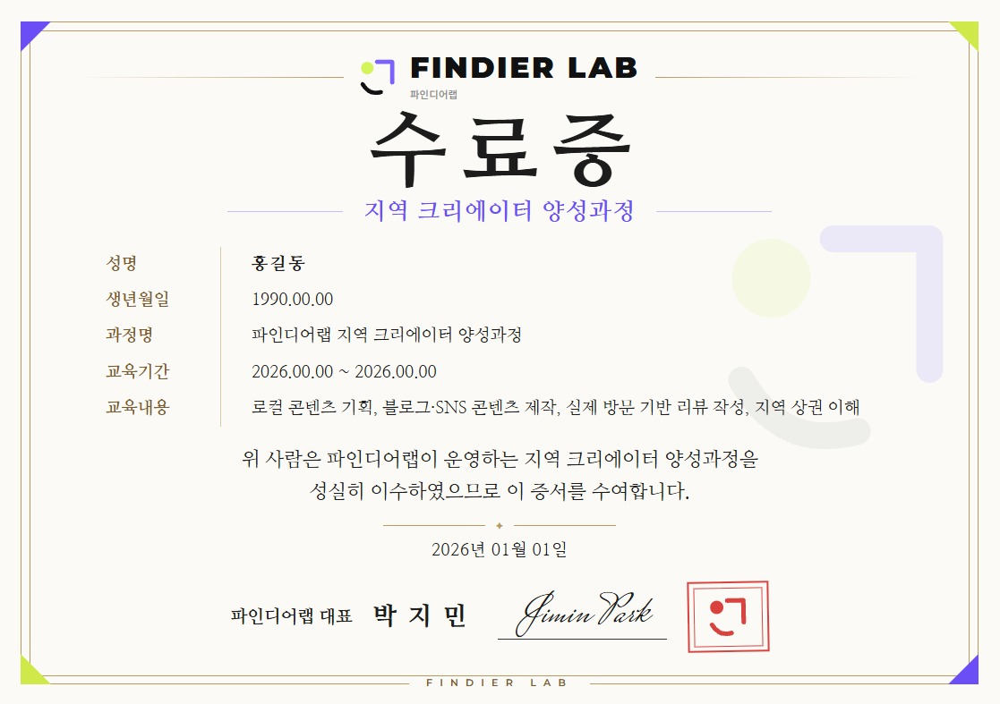

CREATOR
지역 크리에이터를
모집합니다.
부산·경남·양산·김해·창원 인근 — 블로그를 잘하지 않아도 괜찮습니다.
직접 가보고, 느끼고, 솔직하게 기록할 수 있으면 됩니다.
WHAT YOU GET
크리에이터가 받는 것
무료 제공
AI 활용 블로그 수익화 강의
59만원 상당 강의를 무료로 제공합니다.
이수 시 발급
크리에이터 수료증
모든 교육을 이수하면 수료증을 드립니다.
활동 시 제공
체험단 제공
활동 지역 매장에서 실제 체험 기회를 제공합니다.

WHY NOW
AI가 정보를 빠르게 만들어낼수록,
사람이 직접 경험한 기록의 가치는 커집니다.
AI가 아무리 빨리 글을 써내도, 직접 겪어본 사람의 이야기는 AI가 대신 쓸 수 없습니다.
그래서 파인디어랩은 사람이 직접 경험하고 남긴 기록을 가장 중요하게 생각합니다.
HOW IT WORKS
지역 크리에이터 경험 구조
파인디어랩이 지역 사업자와 크리에이터를 연결하는 방식
지역 크리에이터 양성
기본 가이드 제공
기록 방식 안내
브랜드·공간 관찰
책임 있는 콘텐츠 제작
사업장 체험
실제 방문
서비스·공간 경험
사진 및 메모
고객 관점 관찰
콘텐츠 기록
공개 콘텐츠 제작
블로그·SNS·사진
자기 언어로 기록
실제 경험 기반
FINDIER LAB
크리에이터의 기록 정리
손님 입장에서 다시 보기
사장님께 전달할 내용 정리
개선할 점 찾기
사업자 제공
리포트 제공
비공개 경험노트
손님이 느낀 점 정리
개선 제안
결과
손님이 실제로 느낀 것
현장에서 들은 솔직한 이야기
꾸준히 쓸 수 있는 콘텐츠
계속 이어갈 수 있는 홍보
가게가 더 좋아지는 아이디어
손님 입장에서 본 새로운 시각
DIFFERENCE
일반 체험단과 무엇이 다른가요?
일반적인 홍보형 체험
방문 → 콘텐츠 제작 →
게시
Findier Creator
FAQ
자주 묻는 질문
블로그를 처음 시작해도 되나요?
네. 팔로워 수나 경력보다 관찰력과 기록하려는 마음을 봅니다. 이제 막 시작한 분도 지원할 수 있습니다.
팔로워가 많아야 하나요?
아니요. Findier Creator는 영향력보다 관찰력·기록력·신뢰성·지역 이해도를 우선 기준으로 봅니다.
비공개 경험 노트는 공개되나요?
아니요. 비공개 경험 노트는 해당 사업자에게만 전달되는 기록입니다. 외부에 공개되지 않습니다.
어떤 지역에서 활동하나요?
현재는 양산·부산·김해·창원 등 부산·경남권을 중심으로 시작하며, 앞으로 활동 지역을 넓혀갈 예정입니다.